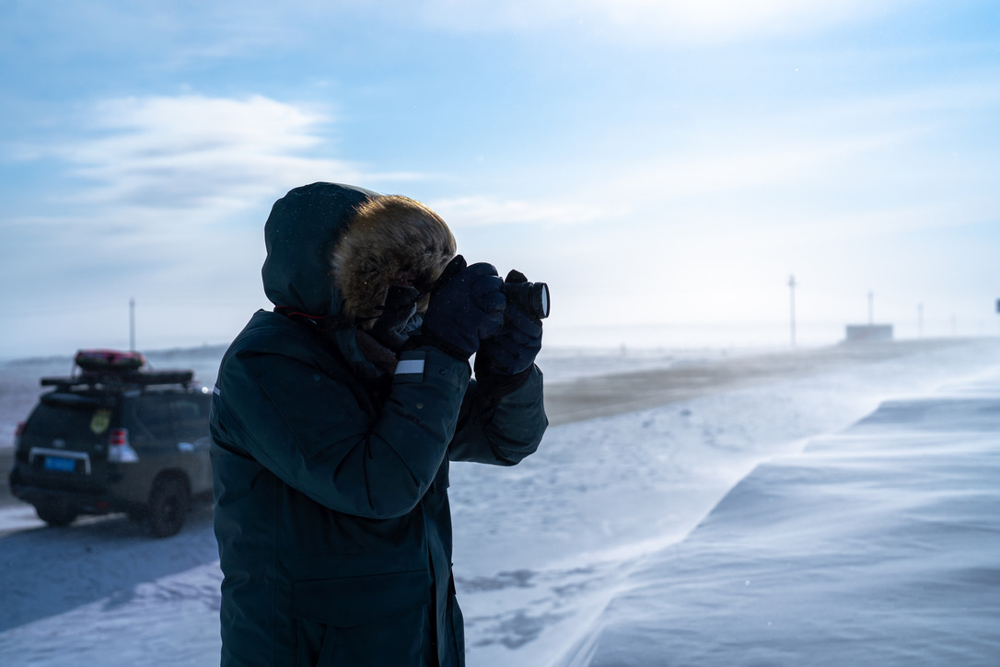

University of Sydney
Feb 2023 – Dec 2026 (expected)Major in Computer Science; minor in Mathematics.
Robot learning, visuomotor imitation, tactile feedback, dexterous manipulation, and decentralized multi-robot collaboration.

Major in Computer Science; minor in Mathematics.
Build Python- and ROS-based teleoperation and data-collection systems for robotic arms, dexterous hands, and visuotactile sensors. Develop multi-arm control and human-in-the-loop intervention, and deploy Diffusion Policy and ACT on real robots.
Contributed to Zeno-1, a decentralized multi-robot embodied AI foundation model, and supported real-world collaboration demonstrations involving shared-object manipulation and deformable objects.
Video unavailable. Open video ↗
ContactPolicy uses tactile and force histories to regulate the gripper during contact-rich stages while a visual policy controls arm motion. An Intent policy manages control handover, enabling fine-grained adjustments and target retention during ongoing manipulation.
Video unavailable. Open video ↗
CoRE learns collaboration-role experts within one shared policy. Each robot acts from local visual observations and proprioception without inter-robot messages or role labels. Experiments study complementary behaviour across simulation and real-world manipulation tasks, including robustness to partner delays and slowdowns.
Video unavailable. Open video ↗
A nested policy-learning framework that uses learned hand skills to assist dexterous demonstration collection, then trains an outer visuomotor policy for autonomous deployment.
Video unavailable. Open video ↗
A tri-manual imitation learning system that lets one operator demonstrate behaviours for three robotic arms. The work introduces Dependency-Aware Tri-Arm Scheduling to retime demonstrations offline before training a synchronized policy.
† Equal contribution. * Corresponding author.